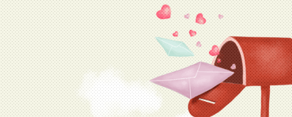
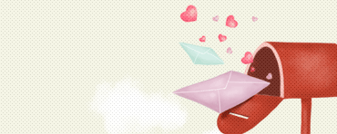

설문조사

대전광역시 설문 및 공모페이지로
안내합니다.
시민시정제안
실/국, 시청의 현안과제는 물론 생활공감 등 자유롭게 제안하세요.
칭찬합시다
잊지 못할 한사람의 친절에
감사함을 느끼셨나요?

대전시소
시민의 생각이 정책이 되고 시민이 정책과정에 참여합니다.

대전광역시 설문 및 공모페이지로
안내합니다.
실/국, 시청의 현안과제는 물론 생활공감 등 자유롭게 제안하세요.
잊지 못할 한사람의 친절에
감사함을 느끼셨나요?

시민의 생각이 정책이 되고 시민이 정책과정에 참여합니다.